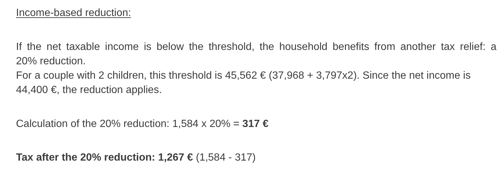

4. Anwendungsübung – Versionen 1 und 2
4.1. Die Aufgabenstellung

Die obenstehende Tabelle (eine französische Seite von lefigaro.fr) dient zur Berechnung der Steuer im vereinfachten Fall eines Steuerpflichtigen, der nur sein Gehalt angeben muss. Wie in Anmerkung (1) angegeben, ist die so berechnete Steuer die Steuer vor drei Korrekturen:
- der Deckelung des Familienquotienten, die bei hohen Einkommen greift;
- dem Abschlag (décote) und der Ermäßigung (réduction), die für Geringverdiener gelten.
Die Steuerberechnung umfasst somit die folgenden Schritte [http://impotsurlerevenu.org/comprendre-le-calcul-de-l-impot/1217-calcul-de-l-impot-2019.php]:

Wir schlagen vor, ein Programm zu schreiben, das die Steuer eines Steuerpflichtigen im vereinfachten Fall berechnet, in dem dieser nur ein einziges Gehalt anzugeben hat. Es gelten die Regeln der Steuer 2019 auf die Einkommen von 2018. Sie dienen als roter Faden für dieses gesamte Dokument: Der Algorithmus bleibt in allen Versionen der Anwendung derselbe; nur ihre Architektur ändert sich.
4.1.1. Berechnung der Bruttosteuer
Die Bruttosteuer lässt sich wie folgt berechnen.
Zunächst wird die Anzahl der Anteile (Parts) des Steuerpflichtigen berechnet:
- jeder Elternteil trägt 1 Anteil bei;
- die ersten beiden Kinder tragen jeweils 1/2 Anteil bei;
- jedes weitere Kind trägt jeweils einen Anteil bei.
Die Anzahl der Anteile beträgt somit:
- nbShares = 1 + nbChildren * 0.5 + (nbChildren - 2) * 0.5, wenn der Arbeitnehmer unverheiratet ist;
- nbShares = 2 + nbChildren * 0.5 + (nbChildren - 2) * 0.5, wenn er verheiratet ist;
wobei nbChildren die Anzahl der Kinder ist und der Term (Anzahl der Kinder - 2) * 0.5 nur bei drei oder mehr Kindern angewendet wird. Anschließend gilt:
- das zu versteuernde Einkommen R wird als R = 0.9 * S berechnet, wobei S das Jahresgehalt ist;
- der Familienquotient QF = R / nbShares wird berechnet;
- die Bruttosteuer I wird anhand der folgenden Daten (2019) berechnet:
field1 (Schwellenwert für QF) | field2 (coeffR) | field3 (coeffN) |
9964 | 0 | 0 |
27,519 | 0.14 | 1,394.96 |
73,779 | 0.3 | 5,798 |
156,244 | 0.41 | 13,913.69 |
0 | 0.45 | 20,163.45 |
Jede Zeile hat 3 Felder: field1, field2, field3. Zur Berechnung der Steuer I sucht man die erste Zeile, in der QF <= field1 gilt, und verwendet die Werte dieser Zeile. Beispiel für einen verheirateten Arbeitnehmer mit zwei Kindern und einem Jahresgehalt S von 50.000 Euro:
- zu versteuerndes Einkommen: R = 0.9 * S = 45,000;
- Anzahl der Anteile: nbShares = 2 + 2 * 0.5 = 3;
- Familienquotient: QF = 45,000 / 3 = 15,000.
Die erste Zeile, in der QF <= field1 gilt, ist die folgende:
Die Steuer I ist dann gleich 0.14*R – 1,394.96*nbShares=[0.14*45000-1394.96*3]=2,115. Die Steuer wird auf den nächsten vollen Euro abgerundet.
Ist die Bedingung QF <= field1 bereits in der ersten Zeile erfüllt, beträgt die Steuer null.
Ist die Bedingung QF <= field1 für keine Zeile erfüllt, werden die Koeffizienten der letzten Zeile verwendet. In diesem Fall:
ergibt sich die Bruttosteuer I = 0.45*R – 20,163.45*nbShares.
4.1.2. Deckelung des Familienquotienten

Um festzustellen, ob die Deckelung des Familienquotienten QF greift, berechnet man die Bruttosteuer erneut, ohne die Kinder zu berücksichtigen. Wieder für den verheirateten Arbeitnehmer mit zwei Kindern und einem Jahresgehalt S von 50.000 Euro:
- zu versteuerndes Einkommen: R = 0.9 * S = 45,000;
- Anzahl der Anteile: nbShares = 2 (die Kinder werden nicht mehr berücksichtigt);
- Familienquotient: QF = 45,000 / 2 = 22,500.
Die erste Zeile, in der QF <= field1 gilt, ist die folgende:
Die Steuer I ist dann gleich 0.14*R – 1,394.96*nbShares=[0.14*45000-1394.96*2]=3,510.
- Maximaler kinderbedingter Vorteil: 1,551 * 2 = 3,102 Euro;
- Mindeststeuer: 3,510 – 3,102 = 408 Euro.
Die bereits berechnete Bruttosteuer mit 3 Anteilen von 2.115 Euro liegt über der Mindeststeuer von 408 Euro, die Familiendeckelung greift hier also nicht.
Allgemein ist die Bruttosteuer max(tax1, tax2), wobei:
- [tax1]: die mit Kindern berechnete Bruttosteuer ist;
- [tax2]: die ohne Kinder berechnete und um den maximalen kinderbedingten Abzug (hier 1.551 Euro pro halbem Anteil) verminderte Bruttosteuer ist.
4.1.3. Berechnung des Abschlags

Wieder für den verheirateten Arbeitnehmer mit zwei Kindern und einem Jahresgehalt S von 50.000 Euro:
Die Bruttosteuer (2.115) aus dem vorigen Schritt liegt unter 2.627 Euro für ein Ehepaar (1.595 Euro für eine alleinstehende Person): Der Abschlag (décote) kommt also zur Anwendung. Er wird wie folgt berechnet:
- Abschlag = Schwellenwert (Paar=1,970 / alleinstehend=1,196) - 0.75 * Bruttosteuer;
- Abschlag = 1,970 – 0.75 × 2,115 = 383.75, aufgerundet auf 384 Euro;
- neue Bruttosteuer = 2,115 – 384 = 1,731 Euro.
4.1.4. Berechnung der Ermäßigung

Unterhalb eines bestimmten Schwellenwerts wird auf die Bruttosteuer, die sich aus den vorherigen Berechnungen ergibt, eine Ermäßigung (réduction) von 20 % angewendet. Im Jahr 2019 lauten die Schwellenwerte wie folgt:
- alleinstehend: 21.037 Euro;
- Paar: 42.074 Euro (der im obigen Beispiel verwendete Wert 37.968 scheint falsch zu sein).
Dieser Schwellenwert erhöht sich um den Wert: 3.797 * (Anzahl der von den Kindern beigesteuerten halben Anteile).
Wieder für den verheirateten Arbeitnehmer mit zwei Kindern und einem Jahresgehalt S von 50.000 Euro:
- sein zu versteuerndes Einkommen (45,000 Euro) liegt unter dem Schwellenwert (42,074 + 2 × 3,797) = 49,668 Euro;
- er hat daher Anspruch auf eine Ermäßigung von 20 % seiner Steuer: 1,731 * 0.2 = 346.2 Euro, aufgerundet auf 347 Euro;
- die Bruttosteuer des Steuerpflichtigen beträgt somit: 1,731 – 347 = 1,384 Euro.
4.1.5. Berechnung der Nettosteuer
Unsere Berechnung endet hier: Die zu zahlende Nettosteuer beträgt 1.384 Euro. In Wirklichkeit kann der Steuerpflichtige Anspruch auf weitere Abzüge haben, insbesondere für Spenden an gemeinnützige oder dem Allgemeinwohl dienende Organisationen.
4.1.6. Hohe Einkommen
Unser vorheriges Beispiel gilt für die Mehrheit der Arbeitnehmer. Bei Beziehern hoher Einkommen weicht die Steuerberechnung jedoch ab.
4.1.6.1. Deckelung des 10-%-Abzugs auf das Jahreseinkommen
In den meisten Fällen wird das zu versteuernde Einkommen nach der Formel R = 0.9 × S berechnet, wobei S das Jahresgehalt ist. Man spricht vom 10-%-Abzug. Dieser Abzug ist gedeckelt. Im Jahr 2019:
- darf er 12.502 Euro nicht übersteigen;
- darf er 437 Euro nicht unterschreiten.
Betrachten wir den Fall eines unverheirateten Arbeitnehmers ohne Kinder mit einem Jahresgehalt von 200.000 Euro:
- der 10-%-Abzug beträgt 200,000 Euro > 12,502 Euro. Er wird daher auf 12,502 Euro gedeckelt.
4.1.6.2. Deckelung des Familienquotienten
Betrachten wir einen Fall, in dem die im obigen Abschnitt „Deckelung des Familienquotienten“ beschriebene Deckelung greift: ein Paar mit drei Kindern und einem Jahreseinkommen von 100.000 Euro. Gehen wir die Berechnungsschritte noch einmal durch:
- der 10-%-Abzug beträgt 10,000 Euro < 12,502 Euro. Das zu versteuernde Einkommen R beträgt daher 100,000 – 10,000 = 90,000 Euro;
- das Paar hat nbShares = 2 + 0.5 × 2 + 1 = 4 Anteile;
- sein Familienquotient beträgt somit QF = R / nbShares = 90,000 / 4 = 22,500 Euro;
- seine Bruttosteuer I1 mit Kindern beträgt I1 = 0.14 × 90,000 − 1,394.96 × 4 = 7,020 Euro;
- seine Bruttosteuer I2 ohne Kinder:
- QF = 90,000 / 2 = 45,000 Euro;
- I2 = 0.3 × 90,000 − 5,798 × 2 = 15,404 Euro;
- Die Regel der Familiendeckelung besagt, dass der aus den Kindern gezogene Vorteil (1,551 × 4 halbe Anteile) = 6,204 Euro nicht übersteigen darf. Hier beträgt er jedoch I2-I1 = 15,404 – 7,020 = 8,384 Euro und liegt damit über 6,204 Euro;
- Die Bruttosteuer wird daher als I3 = I2-6204 = 15,404 - 6,204 = 9,200 Euro neu berechnet.
Dieses Paar erhält weder einen Abschlag noch eine Ermäßigung, und seine endgültige Steuer beträgt 9.200 Euro.
4.1.7. Offizielle Zahlen
Die Steuerberechnung ist komplex. In diesem gesamten Dokument dienen Beispiele zur Veranschaulichung des Verfahrens. Die offiziellen Ergebnisse stammen aus dem Simulator der Steuerverwaltung für 2019 [https://www3.impots.gouv.fr/simulateur/calcul_impot/2019/simplifie/index.htm]:
Steuerpflichtiger | Offizielle Ergebnisse | Ergebnisse des Algorithmus des Dokuments |
Paar mit 2 Kindern und einem Jahreseinkommen von 55.555 Euro | Steuer = 2.815 Euro Steuersatz = 14 % | Steuer = 2.814 Euro Steuersatz = 14 % |
Paar mit 2 Kindern und einem Jahreseinkommen von 50.000 Euro | Steuer = 1.385 Euro Abschlag = 384 Euro Ermäßigung = 346 Euro Steuersatz = 14 % | Steuer = 1.384 Euro Abschlag = 384 Euro Ermäßigung = 347 Euro Steuersatz = 14 % |
Paar mit 3 Kindern und einem Jahreseinkommen von 50.000 Euro | Steuer = 0 Euro Abschlag = 720 Euro Ermäßigung = 0 Euro Steuersatz = 14 % | Steuer = 0 Euro Abschlag = 720 Euro Ermäßigung = 0 Euro Steuersatz = 14 % |
Alleinstehend mit 2 Kindern und einem Jahreseinkommen von 100.000 Euro | Steuer = 19.884 Euro Abschlag = 0 Euro Ermäßigung = 0 Euro Steuersatz = 41 % | Steuer = 19.884 Euro Zuschlag = 4.480 Euro Abschlag = 0 Euro Ermäßigung = 0 Euro Steuersatz = 41 % |
Alleinstehend mit 3 Kindern und einem Jahreseinkommen von 100.000 Euro | Steuer = 16.782 Euro Abschlag = 0 Euro Ermäßigung = 0 Euro Steuersatz = 41 % | Steuer = 16.782 Euro Zuschlag = 7.176 Euro Abschlag = 0 Euro Ermäßigung = 0 Euro Steuersatz = 41 % |
Paar mit 3 Kindern und einem Jahreseinkommen von 100.000 Euro | Steuer = 9.200 Euro Abschlag = 0 Euro Ermäßigung = 0 Euro Steuersatz = 30 % | Steuer = 9.200 Euro Zuschlag = 2.180 Euro Abschlag = 0 Euro Ermäßigung = 0 Euro Steuersatz = 30 % |
Paar mit 5 Kindern und einem Jahreseinkommen von 100.000 Euro | Steuer = 4.230 Euro Abschlag = 0 Euro Ermäßigung = 0 Euro Steuersatz = 14 % | Steuer = 4.230 Euro Abschlag = 0 Euro Ermäßigung = 0 Euro Steuersatz = 14 % |
Alleinstehend, ohne Kinder, mit einem Jahreseinkommen von 100.000 Euro | Steuer = 22.986 Euro Abschlag = 0 Euro Ermäßigung = 0 Euro Steuersatz = 41 % | Steuer = 22.986 Euro Zuschlag = 0 Euro Abschlag = 0 Euro Ermäßigung = 0 Euro Steuersatz = 41 % |
Paar mit 2 Kindern und einem Jahreseinkommen von 30.000 Euro | Steuer = 0 Euro Abschlag = 0 Euro Ermäßigung = 0 Euro Steuersatz = 0 % | Steuer = 0 Euro Abschlag = 0 Euro Ermäßigung = 0 Euro Steuersatz = 0 % |
Alleinstehend, ohne Kinder, mit einem Jahreseinkommen von 200.000 Euro | Steuer = 64.211 Euro Abschlag = 0 Euro Ermäßigung = 0 Euro Steuersatz = 45 % | Steuer = 64.210 Euro Zuschlag = 7.498 Euro Abschlag = 0 Euro Ermäßigung = 0 Euro Steuersatz = 45 % |
Paar mit 3 Kindern und einem Jahreseinkommen von 200.000 Euro | Steuer = 42.843 Euro Abschlag = 0 Euro Ermäßigung = 0 Euro Steuersatz = 41 % | Steuer = 42.842 Euro Zuschlag = 17.283 Euro Abschlag = 0 Euro Ermäßigung = 0 Euro Steuersatz = 41 % |
Im obigen Beispiel bezeichnet der „Zuschlag“ den Mehrbetrag, den Bezieher hoher Einkommen aufgrund zweier Faktoren zahlen:
- der Deckelung des 10-%-Abzugs vom Jahreseinkommen;
- der Deckelung des Familienquotienten.
Diese Kennzahl konnte nicht überprüft werden, da der Simulator der Steuerverwaltung sie nicht liefert.
Wir sehen, dass der Algorithmus des Dokuments jedes Mal den richtigen Steuerbetrag berechnet, allerdings mit einer Abweichung von 1 Euro. Diese Abweichung rührt von der Rundung her. Alle Geldbeträge werden gerundet – mal auf den nächsten vollen Euro auf-, mal abgerundet. Da dem Autor die offiziellen Rundungsregeln nicht bekannt sind, wurden die Geldbeträge im Algorithmus des Dokuments wie folgt gerundet:
- bei Abschlägen und Ermäßigungen auf den nächsten vollen Euro aufgerundet;
- bei Zuschlägen und der endgültigen Steuer auf den nächsten vollen Euro abgerundet.
Im folgenden Abschnitt werden Tests durchgeführt, um die Gültigkeit der Ergebnisse zu überprüfen. Diese Tests verwenden die Beispiele der vorherigen Tabelle mit einer zulässigen Abweichung von 1 Euro.
4.2. Die Verzeichnisstruktur der Skripte
Die ersten beiden Versionen der Anwendung befinden sich im Ordner [scripts-console/tax]:
Zur Orientierung enthält die Datei [verified-results.txt] die Ergebnisse, die mit dem offiziellen Simulator für die Steuerpflichtigen der Datei [taxpayersdata.txt] ermittelt wurden.
4.3. Version 1
4.3.1. Der Algorithmus
Wir stellen ein erstes Programm vor, bei dem:
- die zur Steuerberechnung benötigten Daten als Arrays und Konstanten fest im Programm codiert sind;
- die Daten der Steuerpflichtigen (Familienstand, Kinder, Gehalt) in einer ersten Textdatei, [taxpayersdata.txt], gespeichert sind;
- die Ergebnisse der Steuerberechnung (Familienstand, Kinder, Gehalt, Steuer usw.) in einer zweiten Textdatei, [results.txt], gespeichert werden.
Die Datendatei [taxpayersdata.txt] (verheiratet, Kinder, Gehalt) lautet wie folgt:
Das Hauptprogramm des Skripts [version-01/main.php] lautet wie folgt:
Kommentare:
- Zeile 4: Wir erzwingen die strikte Einhaltung der Typen der Parameter und der Rückgabewerte von Funktionen;
- Zeilen 7–16: Definition aller zur Steuerberechnung benötigten Konstanten. Das Schlüsselwort [const] definiert eine globale Konstante, auf die im gesamten Skript zugegriffen werden kann, auch innerhalb von Funktionen. Der PHP-7-Kurs verwendete die Funktion [define("HALF_SHARE_QF_CEILING", 1551)], die dasselbe bewirkt und weiterhin existiert. [const] ist besser lesbar und erlaubt dem Editor, die Namen der Konstanten zu prüfen. Konstantennamen schreibt man üblicherweise in Großbuchstaben;
- Zeile 19: der Name der Textdatei mit den Daten der Steuerpflichtigen (Familienstand, Kinder, Gehalt);
- Zeile 20: der Name der Textdatei mit den Ergebnissen der Steuerberechnung;
- Zeilen 21–23: die drei Datentabellen, die die verschiedenen bei der Steuerberechnung verwendeten Steuerstufen definieren. Es sind die drei Spalten der Tabelle im Abschnitt „Berechnung der Bruttosteuer“;
- Zeilen 26–30: Die Datei mit den Daten der Steuerpflichtigen wird mit [r] zum Lesen geöffnet. Die Funktion [is_readable] prüft zunächst, ob die Datei existiert und gelesen werden kann: Andernfalls wird [$data] auf [false] gesetzt. So wird die Warnung vermieden, die [fopen] bei einer fehlenden Datei ausgeben würde. Die Funktion [fopen] liefert ebenfalls den Wert [false] , wenn die Datei nicht geöffnet werden konnte;
- Zeilen 33–37: Die Ergebnisdatei wird mit [w] zum Schreiben geöffnet;
- Zeilen 40–54: Schleife zum Lesen der Zeilen (verheiratet, Kinder, Gehalt) aus der Datei mit den Daten der Steuerpflichtigen;
- Zeile 40: Die Funktion [fgets] liest bis zu 100 Zeichen und hält am ersten gefundenen Zeilenendezeichen an. Hier sind alle Zeilen kürzer als 100 Zeichen. Wird ein Zeilenendezeichen gefunden, ist es im zurückgegebenen String enthalten. Am Dateiende liefert die Funktion [fgets] den Wert [false];
- Zeile 42: Das Zeilenendezeichen wird entfernt. Die Datei [taxpayersdata.txt] wurde unter Windows erstellt: Ihre Zeilen enden mit den beiden Zeichen \r\n;
- Zeile 44: Die Bestandteile (verheiratet, Kinder, Gehalt) der Zeile werden ermittelt. Es sind drei Zeichenketten;
- Zeilen 45–47: Der Familienstand wird in Kleinbuchstaben umgewandelt, die Anzahl der Kinder und das Gehalt in ganze Zahlen. Diese expliziten Umwandlungen sind notwendig: Im strikten Modus würde die Funktion [calculateTax] den String „2“ für ihren Parameter [int $children] nicht akzeptieren;
- Zeile 49: Die Steuer wird berechnet. Das Ergebnis wird als assoziatives Array zurückgegeben. Beachten Sie, dass das Gehalt, ein [int], an den [float $salary]-Parameter der Funktion [calculateTax] übergeben wird: Das ist die einzige im strikten Modus erlaubte Umwandlung;
- Zeile 51: Die Schlüssel [married, children, salary] werden an den Anfang des zuvor erhaltenen Arrays gestellt. Der Operator + liefert, auf zwei assoziative Arrays angewendet, ein Array, das die Elemente beider Arrays enthält;
- Zeile 52: Das Ergebnis wird als JSON-String in der Ergebnisdatei gespeichert, eine Zeile pro Steuerpflichtigem;
- Zeilen 56–57: Sobald die Datei mit den Daten der Steuerpflichtigen vollständig verarbeitet ist, werden die Dateien geschlossen;
- Zeile 64: die Funktion, die das Zeilenendezeichen aus einer Zeile des Strings [$line] entfernt. Das Zeilenendezeichen ist auf Windows-Systemen der String „\r\n“ und auf Unix-Systemen „\n“. Das Ergebnis ist der Eingabestring ohne sein Zeilenendezeichen.
Die Funktion [calculateTax] lautet wie folgt:
Kommentare:
- Zeile 81: Die Bruttosteuer wird einschließlich der unterhaltsberechtigten Personen berechnet. Das Ergebnis hat die Form [["tax" => $tax, "surcharge" => $surcharge, "rate" => $coeffR[$i]]], wobei:
- [tax]: die Bruttosteuer ist;
- [surcharge]: der Betrag des Zuschlags ist, falls vorhanden. Er fällt an, wenn der 10-%-Abzug den Schwellenwert von 12.502 Euro übersteigt;
- [rate]: der Steuersatz des Steuerpflichtigen ist;
- Zeile 82: die geschuldete Bruttosteuer [$tax1] ;
- Zeilen 84–85: Hat der Steuerpflichtige mindestens ein Kind, wird die Steuerberechnung mit denselben Daten wiederholt, jedoch mit 0 Kindern. Diese zweite Berechnung ist notwendig, um zu bestimmen, ob die durch Kinder bewirkte Steuerermäßigung eine bestimmte Obergrenze überschreitet;
- Zeile 86: die geschuldete Bruttosteuer [$tax2] ;
- Zeilen 88–94: Bei der Bruttosteuer [$tax2] werden nun die Kinder berücksichtigt: Jeder von den Kindern beigesteuerte halbe Anteil führt zu einer Minderung um [HALF_SHARE_QF_CEILING] Euro. Die ersten beiden Kinder tragen jeweils einen halben Anteil bei; weitere Kinder tragen jeweils einen ganzen Anteil bei, also insgesamt zwei halbe Anteile;
- Zeilen 96–97: der Fall, dass der Steuerpflichtige keine Kinder hat. In diesem Fall ist die Berechnung von [$tax2] überflüssig. Sie ist gleich [$tax1];
- Zeilen 100–108: Es wurden zwei Bruttosteuerbeträge berechnet: [tax1, tax2]. Die Steuerverwaltung behält den höheren der beiden. Daraus ergibt sich eine Bruttosteuer von [$tax];
- Zeilen 110–111: Auf den Bruttobetrag [$tax] kann ein Abschlag angewendet werden;
- Zeilen 113–114: Auf den Bruttobetrag [$tax] kann eine Ermäßigung angewendet werden;
- Zeilen 116–122: [$tax] ist nun die zu zahlende Nettosteuer. Die Ergebnisse werden zurückgegeben. Die Berechnungen erfolgten mit reellen Zahlen ([float]): Die Funktionen [floor] (Abrunden auf die nächste ganze Zahl) und [ceil] (Aufrunden auf die nächste ganze Zahl) liefern ebenfalls reelle Zahlen. Wir wandeln die Beträge mit [(int)] in ganze Zahlen um, damit sie ohne Nachkommaanteil erscheinen. Der Steuersatz bleibt eine reelle Zahl.
Die Funktion [calculateTax2] lautet wie folgt:
Kommentare:
- Hier wird die Steuer nach dem sogenannten progressiven Steuertarif berechnet;
- Zeilen 134–142: Berechnung der Anzahl der Anteile des Steuerpflichtigen;
- Zeile 145: Das zu versteuernde Einkommen wird mithilfe einer Funktion berechnet. Wie wir gesehen haben, ist es nicht immer 0.9*annualSalary. Der 10-%-Abzug ist nämlich auf 12.502 Euro gedeckelt;
- Zeile 147: Berechnung eines eventuellen Zuschlags, wenn das zu versteuernde Einkommen 0.9*annualSalary übersteigt;
- Zeilen 149–151: Korrigiert den Umstand, dass sich aufgrund von Rundungsfehlern manchmal [$surcharge=-1] ergibt;
- Zeile 153: der Familienquotient;
- Zeilen 155–160: Mit diesem Quotienten wird die Steuerstufe des Steuerpflichtigen bestimmt. Wir suchen das erste Element von [$limits], das größer oder gleich dem Quotienten ist. Der Quotient wurde im letzten Element von [$limits] gespeichert (das 0 war): Die Schleife [while] endet daher spätestens an diesem letzten Element. Da das Array [$limits] als Wert übergeben wurde, wirkt sich diese Änderung nur auf die lokale Kopie der Funktion aus;
- Zeile 164: Sobald die Steuerstufe des Steuerpflichtigen bestimmt ist, lässt sich seine Bruttosteuer berechnen. Die Funktion [floor($x)] liefert die ganze Zahl, die unmittelbar kleiner ist als [$x];
- Zeile 166: Die berechneten Informationen werden zurückgegeben.
Die Funktion [getTaxableIncome] lautet wie folgt:
Kommentare:
- Zeile 174: Der Standardabzug beträgt 10 % des Jahresgehalts;
- Zeilen 176–178: Der Abzug darf den Höchstabzug [TEN_PERCENT_ALLOWANCE_MAX] nicht übersteigen;
- Zeilen 180–182: Der Abzug darf den Mindestabzug [TEN_PERCENT_ALLOWANCE_MIN] nicht unterschreiten;
- Zeilen 184–186: Berechnung des zu versteuernden Einkommens, mit der Funktion [floor] auf den nächsten vollen Euro abgerundet.
Die Funktion [getDiscount] lautet wie folgt:
Kommentare:
- Zeile 195: maximaler Bruttosteuerbetrag, bis zu dem ein Abschlag gewährt wird. Dieser Betrag unterscheidet sich für Alleinstehende und Paare;
- Zeile 196: ob der Steuerpflichtige Anspruch auf den Abschlag hat;
- Zeile 200: die Formel des Abschlags. [$discountCeiling] ist der Höchstbetrag des Abschlags. Dieser Höchstbetrag wird in Zeile 198 berechnet. Er hängt wiederum vom Status des Steuerpflichtigen ab – verheiratet oder alleinstehend;
- Zeilen 202–204: Der Abschlag darf die geschuldete Bruttosteuer nicht übersteigen. Das ist zum Beispiel der Fall, wenn [$taxes] gleich 0 ist;
- Zeilen 206–208: um einen negativen Abschlag zu vermeiden;
- Zeile 211: Der Abschlag wird auf den nächsten vollen Euro aufgerundet.
Die Funktion [getReduction] lautet wie folgt:
Kommentare:
- Zeilen 218–222: Um Anspruch auf eine Steuerermäßigung zu haben, muss das zu versteuernde Einkommen (Zeile 224) unter einem hier berechneten Schwellenwert liegen. Dieser Schwellenwert erhöht sich für jeden von den Kindern beigesteuerten halben Anteil um [HALF_SHARE_REDUCTION_VALUE] ;
- Zeilen 227–230: Erfüllt der Steuerpflichtige die Bedingungen, hat er Anspruch auf eine Steuerermäßigung von 20 % (Zeile 229);
- Zeile 232: Die Ermäßigung wird auf den nächsten vollen Euro aufgerundet.
4.3.2. Ergebnisse
Führen Sie das Skript in einem im Ordner [version-01] geöffneten Terminal aus:
Die Datei [results.txt] (verheiratet, Kinder, Gehalt, Steuer, Zuschlag, Abschlag, Ermäßigung, Steuersatz) mit den Ergebnissen lautet wie folgt:
Die berechneten Steuern (2814, 1384, 0, 19884, 16782, 9200, 4230, 22.986, 0, 64.210, 42.842) sind diejenigen der Spalte „Ergebnisse des Algorithmus des Dokuments“ der Tabelle der offiziellen Zahlen: Sie stimmen bis auf 1 Euro mit denen überein, die der Simulator der Steuerverwaltung liefert. Beachten Sie, dass in der Ausgabe des PHP-7-Programms die Werte von [children] und [salary] Strings waren („2“, „55555“): Die PHP-8-Version hat sie vor der Berechnung in ganze Zahlen umgewandelt, und die JSON-Datei speichert sie als Zahlen.
4.3.3. Fazit
Der Algorithmus zur Steuerberechnung ist selbst in als einfach geltenden Fällen komplex. Wir kommen hier nicht mehr darauf zurück. Über die verschiedenen Versionen hinweg bleibt sein Kern trotz einiger Änderungen in der Darstellung derselbe. Wir kommentieren daher nur diese Änderungen.
4.4. Version 2
4.4.1. Änderungen
In der vorherigen Version waren die zur Steuerberechnung benötigten Daten als Konstanten und Arrays fest im Code verankert. Diese Methode sollte vermieden werden. In der neuen Version sind diese Daten in der JSON-Datei [taxadmindata.json] ausgelagert, die neben dem Skript liegt:
Der Inhalt der Datei [taxadmindata.json] lautet wie folgt:
Sie enthält die drei Tabellen [limits, coeffR, coeffN] und die Konstanten aus Version 1 mit denselben Namen.
Die neue Version, [version-02/main.php], lautet wie folgt (die nicht gezeigten Funktionen haben denselben Code wie in Version 1, abgesehen vom Parameter [$taxAdminData]):
1 2 3 4 5 6 7 8 9 10 11 12 13 14 15 16 17 18 19 20 21 22 23 24 25 26 27 28 29 30 31 32 33 34 35 36 37 38 39 40 41 42 43 44 45 46 47 48 49 50 51 52 53 54 55 56 57 58 59 60 61 62 63 64 65 66 67 68 69 70 71 72 73 74 75 76 77 78 79 80 81 82 83 84 85 86 87 88 89 90 91 92 93 94 95 96 97 98 99 100 101 102 103 104 105 106 107 108 109 110 111 112 113 114 115 116 117 118 119 120 121 122 123 124 125 126 127 128 129 130 131 132 133 134 135 136 137 138 139 140 141 | |
Kommentare:
- Zeile 9: der Name der JSON-Datei mit den Daten der Steuerverwaltung;
- Zeilen 12–20: Es wird versucht, den Inhalt der JSON-Datei mit dem Namen [$TAXADMINDATA] zu lesen. Die Funktion [file_get_contents] gibt den gesamten Inhalt einer Datei als String zurück, bei einem Fehlschlag [false] ;
- Zeilen 22–32: Wurde die Datei erfolgreich gelesen, prüft man mit der Funktion [json_validate] (PHP 8.3), dass sie gültige JSON-Daten enthält, und decodiert ihren Inhalt anschließend in das assoziative Array [$taxAdminData];
- Zeilen 35–39: Ist bei einer der beiden vorherigen Operationen ein Fehler aufgetreten, wird eine Fehlermeldung auf der Konsole ausgegeben und das Programm beendet;
- Zeile 67: Der Unterschied zu Version 1 besteht darin, dass die Daten (Arrays und Konstanten) der Steuerverwaltung hier im assoziativen Array [$taxAdminData] gespeichert sind, während sie in Version 1 in globalen Arrays und Konstanten gespeichert waren. Der globale Charakter dieser Konstanten unterscheidet die beiden Versionen:
- In Version 1 waren die Konstanten in allen Funktionen von [main.php] zugänglich;
- um dasselbe Ergebnis in Version 2 zu erzielen, muss das assoziative Array [$taxAdminData] als Parameter an alle Funktionen übergeben werden, die es benötigen: [calculateTax], [calculateTax2], [getTaxableIncome], [getDiscount] und [getReduction];
- Zeile 91: Die Funktion [calculateTax] erhält das Array [$taxAdminData] als ersten Parameter. Die Arrays [limits, coeffR, coeffN] sind keine Parameter mehr; sie sind in [$taxAdminData] enthalten;
- Zeilen 108–111: Wo zuvor globale Konstanten verwendet wurden, wird nun der Inhalt des als Parameter erhaltenen Arrays [$taxAdminData], verwendet.
Die Funktion [calculateTax2] holt die Steuerstufen auf dieselbe Weise aus dem Array [$taxAdminData]:
- Zeilen 173–175: Die drei Tabellen der Steuerstufen werden aus dem Dictionary [$taxAdminData] abgerufen. Der Rest des Codes bleibt unverändert.
Die anderen Funktionen werden auf dieselbe Weise umgeschrieben. Zum Beispiel die Funktion [getDiscount]:
Die Ausführung liefert folgende Ausgabe:
und die folgende Datei [results.txt]:
Die erzielten Ergebnisse sind dieselben wie in der vorherigen Version.
4.4.2. Fazit
Version 2 ist deutlich flexibler als Version 1. Bleibt der Algorithmus zur Steuerberechnung in einem anderen Jahr derselbe, ändern sich nur die Steuerstufen und die Berechnungskonstanten. Es genügt, die Datei [taxadmindata.json] zu aktualisieren. Bei Version 1 muss man in den Code eingreifen, um die Steuerstufen und Berechnungskonstanten zu ändern. Es ist jedoch wahrscheinlich, dass die Personen, die die Werte der Steuerstufen und Berechnungskonstanten ändern müssen, keinen Zugriff auf den Code des Algorithmus haben.
Version 2 hat allerdings einen Nachteil: Das Array [$taxAdminData] muss an alle Funktionen übergeben werden, und es gibt keine Garantie, dass es tatsächlich alle erwarteten Schlüssel enthält. Ein Tippfehler in einem Schlüssel der JSON-Datei würde erst bei der Berechnung entdeckt. Version 3 speichert diese Daten daher in einem Objekt der Klasse [TaxAdminData], deren Eigenschaften deklariert und typisiert sind.